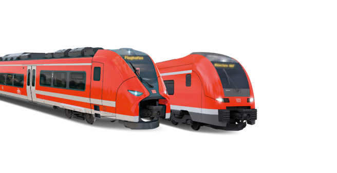

Trains
Ireland has many train stations dotted throughout the country. Most notably in Dublin, Galway, Westport, Athlone, Cork, Limerick.
Trains run frequently throughout the day and makes the country easy to traverse.
Ireland hosts many airports, such as:
With this wide variety of airports in Ireland, tourists will never be any more than a 5 hour drive from any destination in Ireland.
Ireland has many train stations dotted throughout the country. Most notably in Dublin, Galway, Westport, Athlone, Cork, Limerick.
Trains run frequently throughout the day and makes the country easy to traverse.